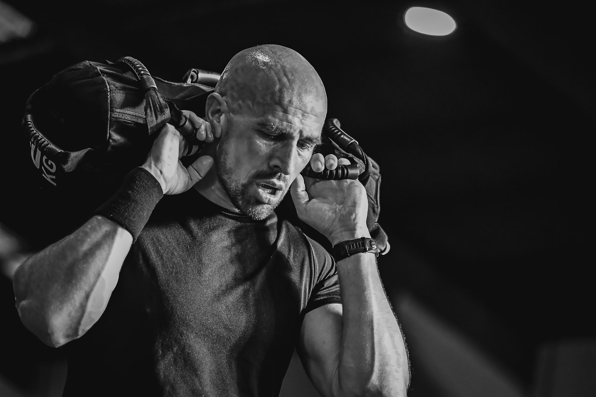
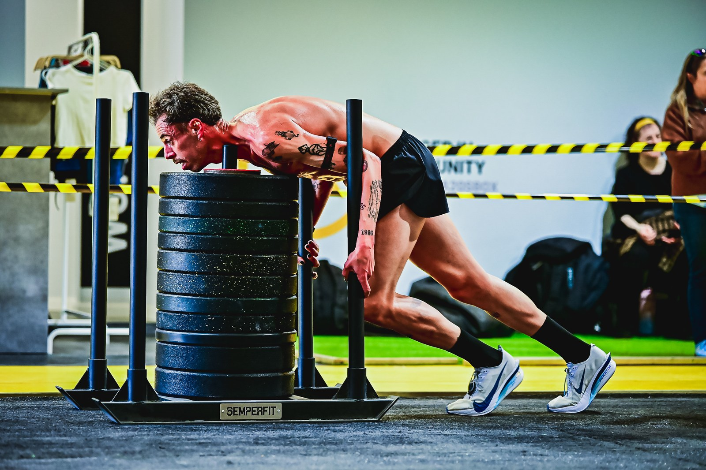

AVYNT Hybrid Arena, the hybrid-training gym in Vila Nova de Gaia, staged the II Avynt Hyrox Simulation on Saturday 30 May 2026, with event coverage by the Image Media team. Organisers recorded 190 registrations for the event, which followed the venue's Hyrox-style AVYNT League opening stage in February, again pairing hybrid-endurance work with a run of strength stations built around the Hyrox simulation format.

Competitors moved between stations including sandbag carries, sled pushes and rowing under a crowd of spectators gathered along the arena floor, with the format again built and run by AVYNT Hybrid Arena in the same Hyrox-inspired simulation style as February's opening stage.

The Image Media coverage team at the II Avynt Hyrox Simulation comprised Nemi, Luanne Oliveira, Luciano Inocencio, Eduardo Pereira and Pedro Oliveira.